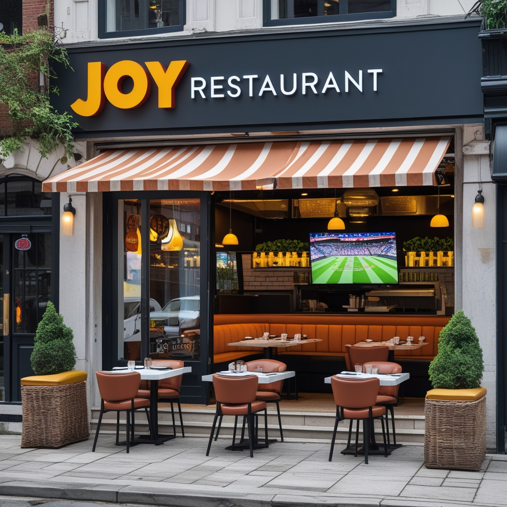

Discover the heart behind our kitchen.
Discover the story behind Joy
At Joy, we believe that food brings people together. Our restaurant was born out of a passion for authentic Italian cuisine and a desire to share that joy with everyone.
Founded in 2025, we aim to offer the finest pizzas and pastas, made with fresh, locally sourced ingredients. From our classic Pepperoni pizza to our unique house specialties, every dish is carefully crafted with love and dedication.
Whether you're here for a family dinner or a special occasion, we guarantee that each bite will transport you straight to Italy.
